How it works
Panes That Follow Each Other
You can open up to eight panes and split the window however you like. Drag a pane to dock it, stack tabs in it, pick a ready-made arrangement, or save the layout as a named workspace that survives a reinstall. Side lists, like an index or a table of contents, can be narrowed or folded away.
Then you link them. Click a verse in one pane and every linked pane turns to it. The commentary, cross references, confession proofs, encyclopedia, and atlas all go to that verse. So do the people and places it names, its place on the timeline, and the books on your shelves that cite it.
One click, and the whole shelf opens to the same page.
You can also set translations side by side, or compare one verse in every translation at once. Any Scripture reference in the program, in a commentary, a confession, or your own notes, shows the verse on hover.
 Opens the full size picture.
Opens the full size picture.
New in 0.4.0
Color Text
Every person, place, time, and number in the Bible, each in its own color. You can see who, what, where, when, and how many at a glance.
 Opens the full size picture.
Opens the full size picture.
Turn it on with Color text in the Bible’s toolbar, beside Interlinear. Each word that answers one of those questions takes its family’s color.
- Who? God, in purple. The Father, the Son, and the Holy Spirit each have a shade of their own, with every name, title, and pronoun that means them.
- Who? Angels, in olive. Angels are bright, and demons, false gods, and idols are dark.
- Who? People, in blue. Named people, then nations and tribes, then words like king and servant, then the pronouns.
- What? Nature, in teal. Animals and plants.
- Where? Places, in green. Named places, then words like city and wilderness, then words like up and there.
- When? Time, in brown. Days, years, and feasts, then words like when and then, and it came to pass.
- How many? Numbers, in crimson. Numbers, measures like cubits and shekels, and amounts like all and many.
Within a family the most specific word is the brightest. Jerusalem is brighter than city, and city is brighter than there. Verbs, objects, and ideas stay black, so the page still reads normally.
How Christ is marked
Every colored word was checked by hand. Where the New Testament says an Old Testament passage speaks of Christ, his color follows. The Servant of Isaiah 53 (opens in a new tab) takes it, and the Son of Psalm 2 (opens in a new tab), and the ruler “whose goings forth have been from of old, from everlasting” in Micah 5:2 (opens in a new tab), and the one in Zechariah 12:10 (opens in a new tab) of whom God says “they shall look upon me whom they have pierced.”
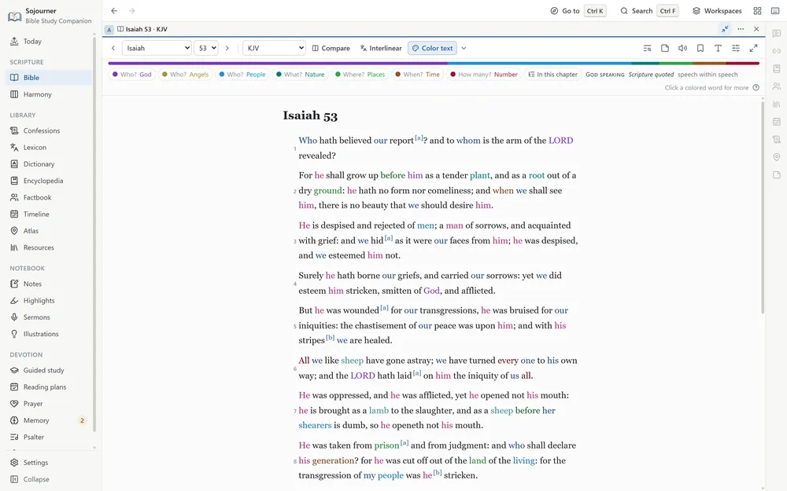
Opens the full size picture.Click any colored word
A colored word opens a card that says what it is and lists every verse where that word has that color. A person or a place opens in the Factbook, and a place opens on the map. The strip under the toolbar shows how much of each family the chapter holds, and a click hides or shows a family. The In this chapter list shows every person and place the chapter names. Pick one and it’s circled wherever it appears.
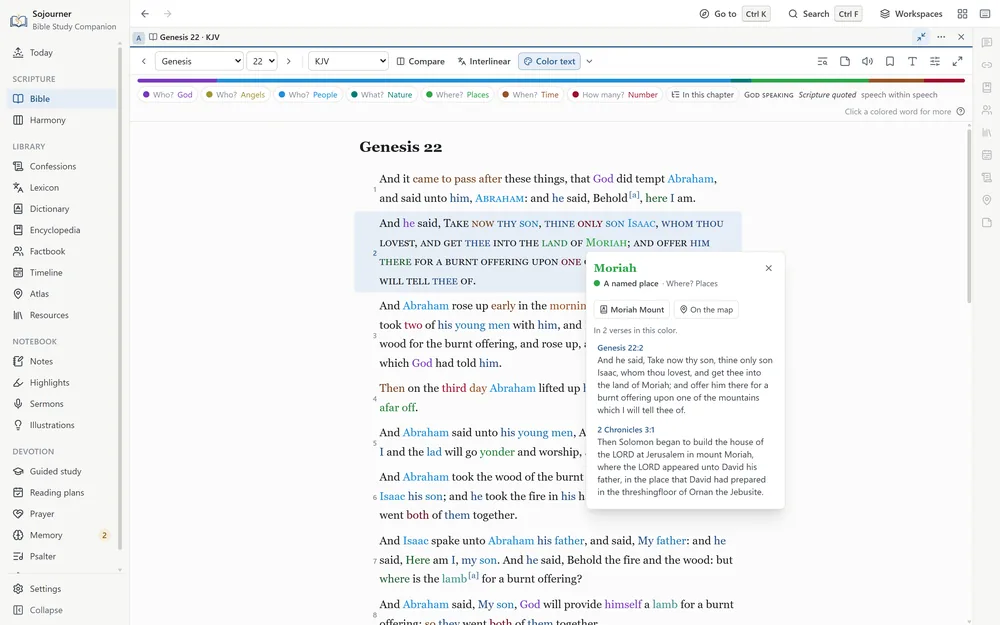
Opens the full size picture.In every translation, and in the Greek and Hebrew
The colors are carried from the King James to the other English translations word by word, so the World English Bible’s Yahweh is colored like the LORD. They reach the Greek and Hebrew through Strong’s numbers, and a translation you add yourself is colored the same way. The Vulgate and the Septuagint have no word tagging, so they get only the names and the most common words.
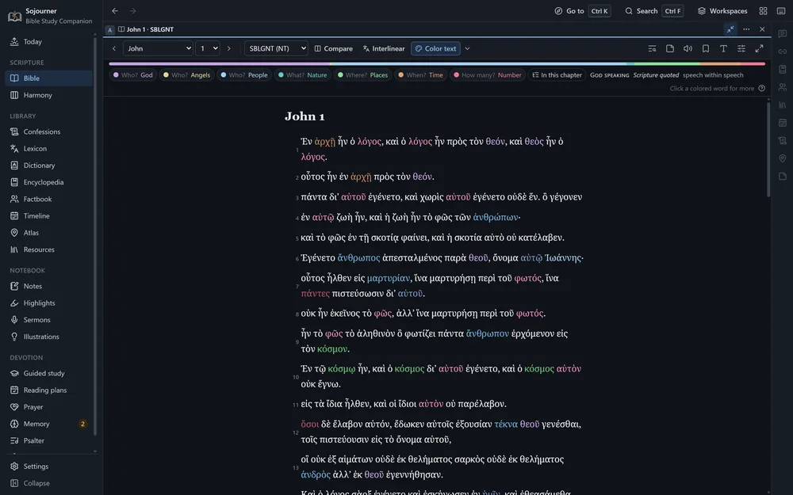
Opens the full size picture.Who’s speaking
Who’s speaking is in the Color text menu. God’s own words are set in small capitals, as “Take now thy son” is in Genesis 22 (opens in a new tab), and every “Thus saith the LORD” in the prophets. Scripture quoted inside a speech is in italics, as when Jesus answers the tempter from Deuteronomy, and speech within speech is a shade lighter. Turn on the words of Jesus in red as well, and every speaker in a passage can be told apart.
If you cannot see every color
Underline each family, in the same menu, also gives each family its own line under the words. One is solid, and the others are dotted, wavy, dashed, double, and a line above.
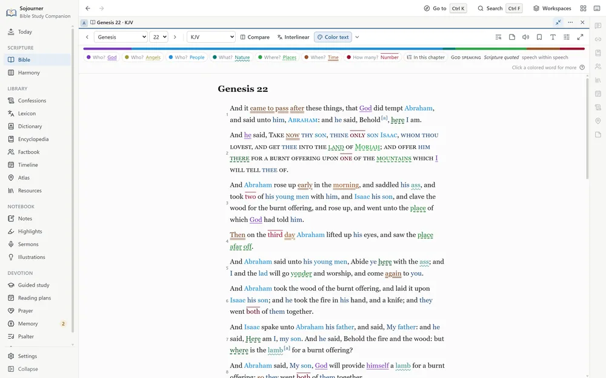
Opens the full size picture.Where color text shows up
Color text can also color a sermon’s passages and tonight’s reading in family worship. There it adds Look closer, which asks the family who is in the reading, what animals and plants, where it happens, when, and how many. Each answer stays hidden until you show it.
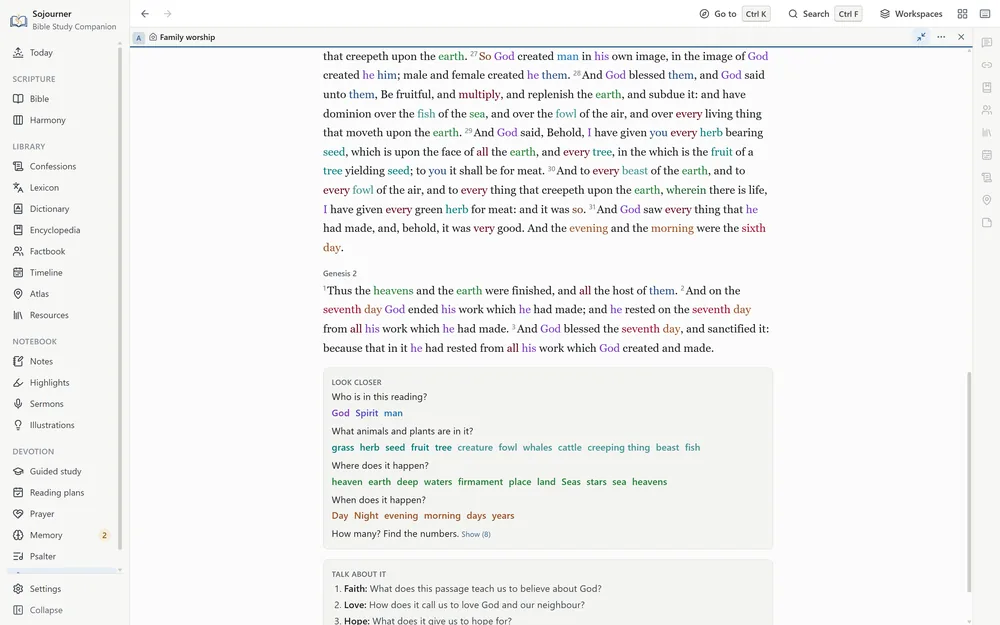
Opens the full size picture.Search can look for a color or a speaker too, such as every verse that names the Son, or every place in Isaiah where God himself speaks. Copied verses keep their colors when you paste them into Word, Google Docs, or an email.
Greek and Hebrew
Greek and Hebrew for Beginners
Every phrase of the King James is tagged with its Strong’s number in both testaments. The interlinear is laid out like Blue Letter Bible’s, in a compact table with one row for each English phrase. Each row gives the Strong’s number, the Hebrew or Greek word, its root and how to say it, and its grammar. Small words the King James leaves untranslated, like the Greek article, share the row of the word they go with. One switch puts the words back in the original order. Another hides the Hebrew accent marks while keeping the vowels.
 Opens the full size picture.
Opens the full size picture.
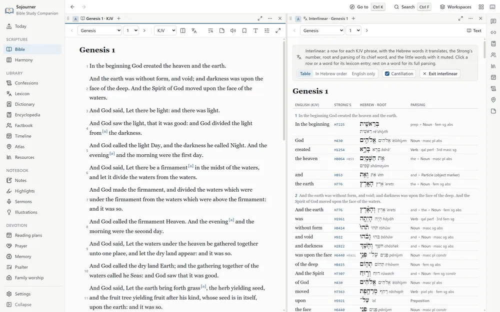
Opens the full size picture.The grammar is spelled out in plain English, such as aorist active indicative, third person singular, rather than in code letters. Hover over a word to see it, or open its card, where a Parsing section explains each term, such as what the aorist is, what a piel does, and why a noun is genitive. The Hebrew and Greek were checked word by word against their sources in both testaments. A Hebrew font sets the vowel points where they belong.
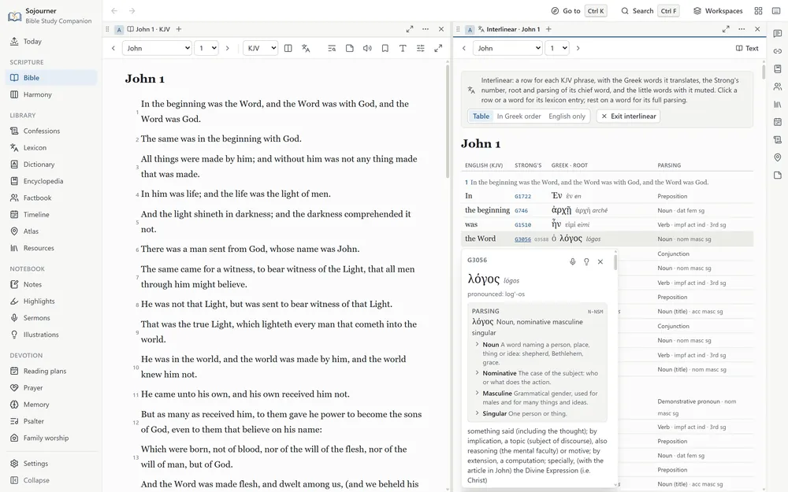
Opens the full size picture.Double-click any word in the text and its entry opens in the lexicon you choose. You can search the Greek and Hebrew without typing accents or vowel points.
Word study
Pick any Hebrew or Greek word and Sojourner shows how often it occurs, how the King James translates it, the forms it takes and the grammar of each, the related words, and every place it appears.
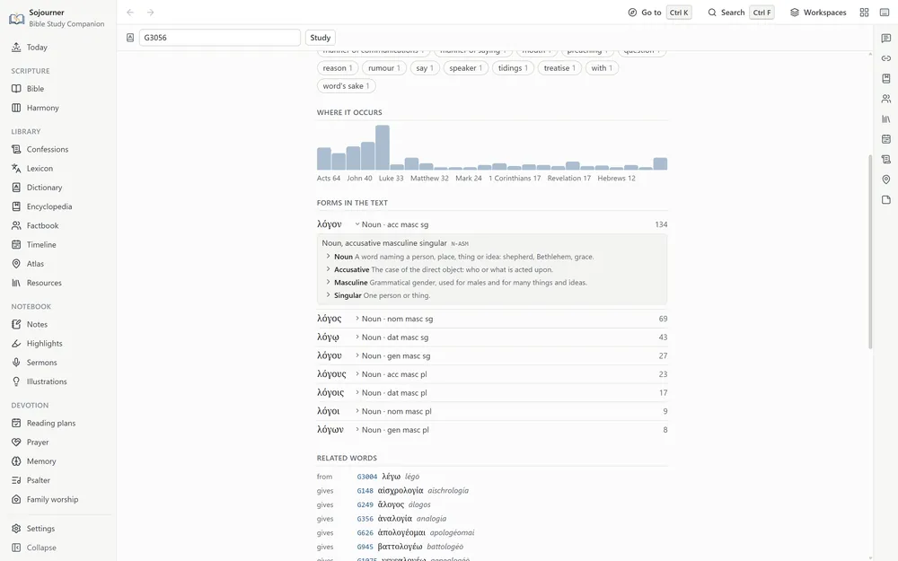
Opens the full size picture.Search by grammar
Every Hebrew and Greek word is parsed, which means its grammar is labeled, such as its tense or whether it’s a command. Search by grammar finds every word of one kind, such as every command in Ephesians. You pick from lists, so you don’t need to know the code letters.
Where the Greek editions differ
Set the five Greek editions side by side on a verse to see where they differ. At 1 John 5:7 (opens in a new tab), the words about the three that bear record in heaven, known as the Comma Johanneum, appear only in the Textus Receptus.
None of this requires you to have studied the languages. A man with a concordance and some patience has done real work in the text for two hundred years. This makes the same work quicker.
Who, where, and when
People, Places, and Maps
A page of text can’t easily show you who a man was, where something happened, or what else was happening at the time. The Factbook, the timeline, the atlas, and the harmonies are for that.
The Factbook
A page for each of four thousand two hundred and seventy-five people, places, and things in the Bible. The Bible has several men named Zechariah, and the Factbook tells them apart by the verses that name them. Each page gives the family, every verse, and what the encyclopedia and dictionary say. Double-click a name in the text to open the person that verse means.
The timeline
Four hundred and sixty-four events, from the Creation to Paul in Rome, on a line you can zoom. The eras are marked, and the kings of Judah and Israel run side by side. A strip beside the text shows where the chapter you’re reading falls. The dates are approximate, taken from a traditional chronology.
Turn on Church history and the line runs on past the apostles to the present, with two hundred and ninety-six events in ten eras. They include councils, creeds and confessions, lives, writings, and missions. Every date comes from a source, mostly Philip Schaff’s History of the Christian Church, and each event quotes it. Where the sources give no date, the event is left out rather than guessed. A creed or confession opens its text, and a writing opens its book if it’s on your shelves. A strip beneath the timeline shows where you are, and you can drag it to move along.
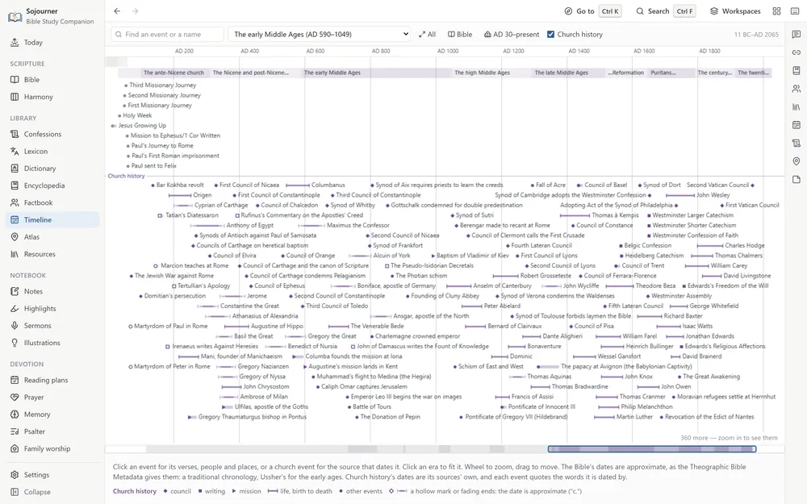
Opens the full size picture.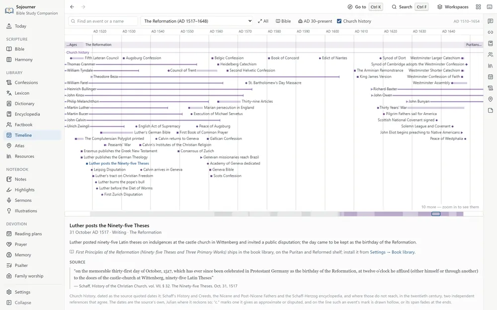
Opens the full size picture.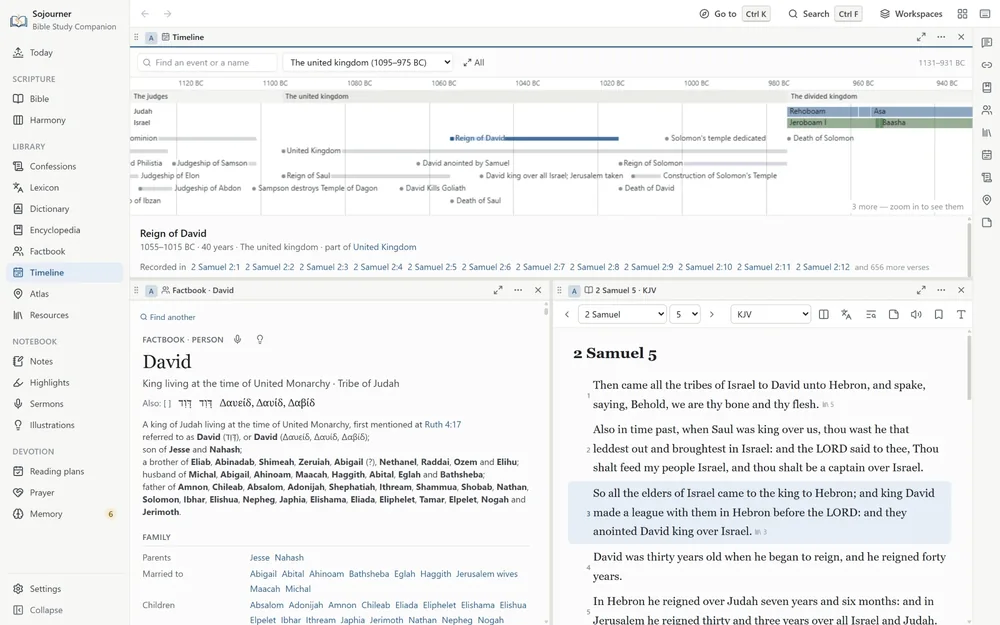
Opens the full size picture.The atlas
One thousand three hundred and forty-two places, each with its coordinates, its modern identification where there is one, and every verse that names it. Fourteen journeys are traced on the map, from Abraham leaving Ur to Paul reaching Rome. Each stop has its own reference and a line saying what happened there. The old regions are lightly shaded inside a dashed line, because no one ever surveyed their borders. A sharp line would claim more than anyone knows.
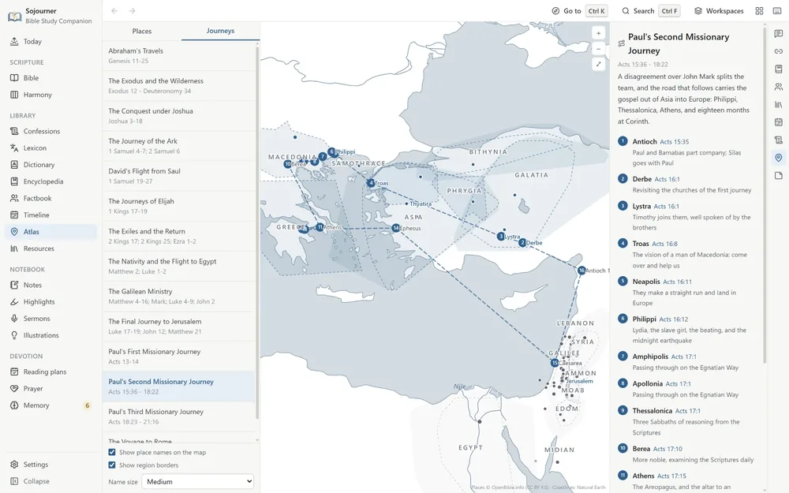
Opens the full size picture.The map packs
Two add-on packs show the land itself. They’re on the releases page beside the book shelves, under Sojourner Library Packs, and they need Sojourner 0.3.6 or later.
The Terrain pack, about 271 MB, shades the hills and valleys of the whole biblical world, with the most detail over the Holy Land. Turn on Raise the land in 3D under Layers and the map tilts to show the relief. You can see the Jordan rift, the Judean hills, and the high plateau east of the Jordan.
The Imagery pack, about 1.26 GB, adds a view from the sky, switched on under Layers. The base layer is NASA’s Blue Marble. Over it lies a cloud-free picture from the Copernicus Sentinel-2 satellites, sharp down to ten meters over the Holy Land, Lebanon, and Transjordan. It’s a step less sharp over Syria, Sinai, the Nile delta, Asia Minor, Greece, and Cyprus. It’s a step less again over the Nile up to Thebes, Mesopotamia, and Italy. In this view the drawn coasts and lakes are hidden so the land shows through.
To add one, open Settings, choose Library packs, and pick Install a map pack. Like the shelves, they’re files you download yourself, so they can also come on a USB stick.
The harmonies
Two harmonies of the Gospels, both laid out in four columns. Robert M. Sutherland’s of 2020 has a hundred and thirty-six events, and A. T. Robertson’s of 1922 has a hundred and eighty-five. Each event lists where it’s told in Matthew, Mark, Luke, and John, with Acts 1 (opens in a new tab) for the ascension. Where an event appears in more than one Gospel, one button sets the accounts side by side.
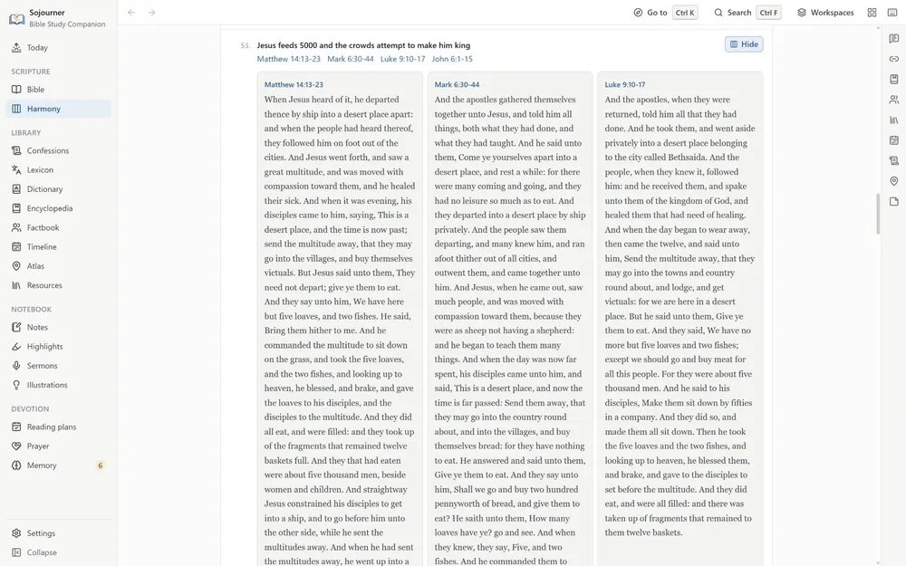
Opens the full size picture.One Search Box
One box searches Scripture, the commentaries, the lexicons, the Factbook, the confessions, the encyclopedia, your books, and your own notes, prayers, sermons, and illustrations, with the same rules everywhere.
Put an exact phrase in quotation marks. Ask for either of two words with OR, or leave a word out with a minus sign. You can also group words in parentheses, ask for words near each other, match the start of a word, or use regular expressions. A plus sign asks for the exact form and its capitals. So +LORD finds the covenant name as the King James prints it and skips the ordinary word Lord.
You can also narrow a search by typing a filter into the box. There are filters for a book, a translation, a Strong’s number, the words of Christ, and the verses you have notes on, and they’re saved with the search. Older spellings match, so shew finds show. Results can be counted by book and by translation, or laid out like a printed concordance.
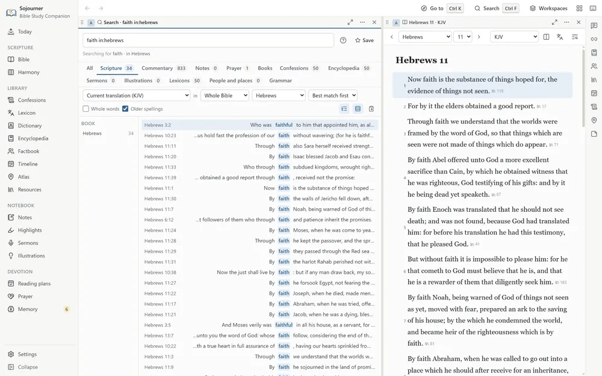
Opens the full size picture.Reading
Book and chapter navigation, paragraph mode, verse numbers on or off, and red letters. Five named highlight colors and an underline, bookmarks, a find bar for the open chapter, a focus mode that hides everything else, and printing.
Seven themes, including sepia, true black, and two high contrast themes. A font made for dyslexic readers, adjustable text size, and reduced motion for anyone who needs the screen to hold still.
The built-in voice reads any chapter, commentary, or book aloud. In a book it starts at your page, and the page follows the voice. Select a passage and choose Read aloud from here to start somewhere else. A commentary is read a verse or a paragraph at a time, and a list in the player jumps to any piece of it.
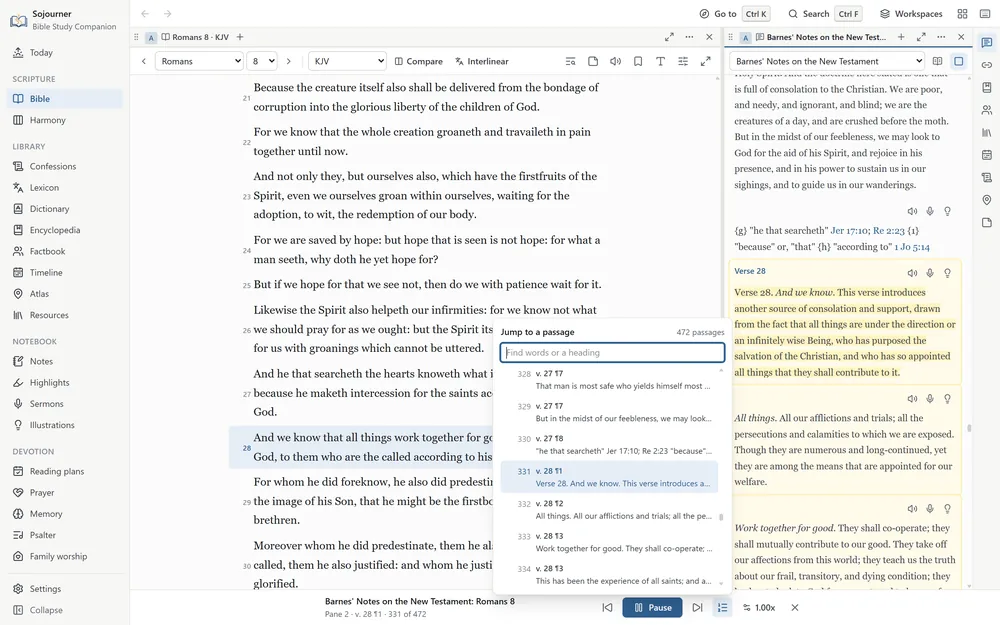
Opens the full size picture.Private Notes
Write on a verse, a chapter, or a highlight. There are templates for observation and interpretation and application, for question and answer, for a sermon outline, and for a prayer in response. Type a reference inside any note and that verse is marked in the text from then on.
Highlighting works the same way. Five colors and an underline, each named for what it marks rather than for its color. Promise in yellow, command in green, doctrine in blue, warning in orange. You can then pull up every promise you’ve marked, across every book, in one list.
The Mine pane gathers everything you’ve written on the open chapter. Deleted notes, prayers, sermons, and illustrations wait thirty days in a trash before they’re gone.
For preachers
Preparing and Preaching
The sermon editor treats your points as the outline, so the structure comes from the manuscript instead of being kept beside it. Passage blocks show live in the sermon’s translation. Drag a point to a new place and its sub-points, and everything written under them, move with it. Open another page while you write and it opens in a new tab beside the sermon, so the manuscript is only a click away.
Part of a point can be set apart as a block for the explanation, the illustration, or the application. A block can also mark a transition, or carry a name you give it. Each kind has its own color, and the colors carry through to preaching mode and print. So you can spot the application under any point at a glance.
 Opens the full size picture.
Opens the full size picture.
Every verse, commentary entry, confession section, lexicon entry, word study, encyclopedia article, and book selection has a small microphone button. Press it and that text drops into the open sermon with its source line attached, so you always know where a quotation came from.
A single shortcut catches a sermon idea from anywhere in the program. A selection in the Bible can start one with its verses already attached. Ideas wait in an inbox beside every manuscript and on the Sermons page, until you drag one into a sermon or start a new sermon from it.
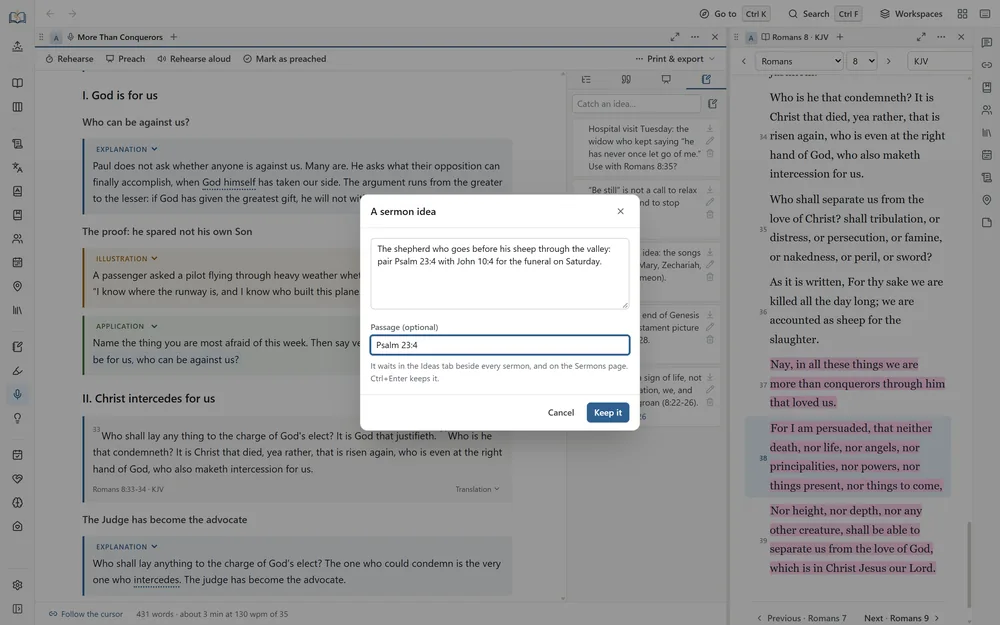
Opens the full size picture.Illustrations go into a file of their own, each with its source and where you’ve used it. If you reach for one you’ve already told in this series, it tells you before you put it in.
Twelve templates give you a starting point. One sets out three points, each with an explanation, an illustration, and an application. Others give a verse-by-verse outline, a defender’s outline for answering an objection, and an outline for preaching to children and youth.
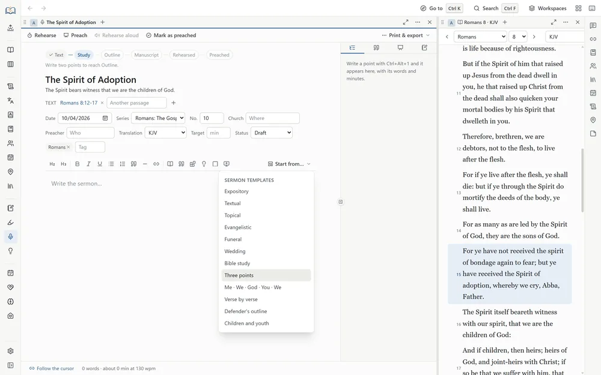
Opens the full size picture.Around that sit a six-stage preparation track, timed rehearsals that measure your speaking rate, and a preaching mode with pulpit-sized type and a clock. It makes slides and exports them to PowerPoint, and any line you mark gets a slide of its own. It builds fill-in handouts, prints, and exports to Markdown. Sermons group into a series with a reading plan for the congregation. A series can give the church a verse a week to learn, printed on cards to hand out. After a sermon is preached, there’s a place to write down how it went.
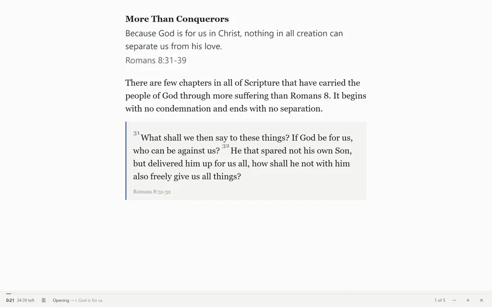
Opens the full size picture.If you preach from a phone or a tablet, there’s a podium file. It’s the whole manuscript as one small web page with every passage written into it. So it needs no internet and no program but a browser. A tap turns the page, the text size can change, and a clock keeps time against the minutes you planned.
![The podium file open on two phones. On the first, the opening part, with the title More Than Conquerors, Romans 8:31-39, a one-sentence summary, the date and service, the opening paragraph, and the start of verse 31 written in below it. On the second, the fourth part, The proof, he spared not his own Son, with its illustration and application blocks in their colors. Across the top of each are a menu of the parts with buttons to step back and forward, a clock at nothing of thirty-five minutes, and buttons to make the text smaller or larger.](assets/img/sojourner-podium.webp) Opens the full size picture.
Opens the full size picture.
The Today Page
The Today page gathers what’s in front of you. Where your reading left off, today’s portion of your plan, the sermons coming up, the memory cards that are due, and the people you meant to pray for. A new install opens on it. Once your household has begun family worship, it also shows what you’ll read and learn the next time you gather.
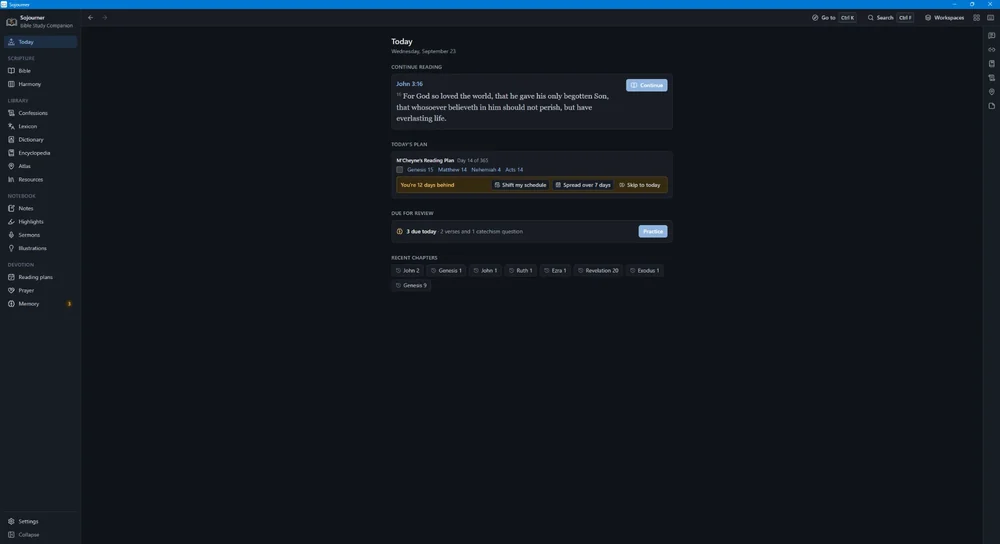
Opens the full size picture.Reading plans come with catch-up tools for the weeks you fall behind, and you can build your own. The prayer journal follows the ACTS pattern and keeps a list of people. It nudges you toward the ones you haven’t prayed for in a while, and it prints.
Memory covers Scripture and the catechism together, on a spaced repetition schedule, with three ways to practice. One shows only the first letter of every word. It’s harder than it looks and works better than reading it over again.
A whole psalm or chapter is learned a part at a time. The next part comes once you’ve recalled the one before twice in a row, and at the end you say it through from the top. A card can also be turned around, to show you the words and ask where they’re found. Ready-made sets range from the Romans Road and the Ten Commandments to short verses for little ones.
The Heidelberg Catechism and the Catechism for Young Children can be learned beside the Shorter and the Larger. For the Westminster catechisms, one button turns a proof text for each question you’re learning into a Scripture card. The program will read a Scripture card aloud, or every one that’s due, so you can practice with your eyes shut or your hands busy. Instead of a streak there’s a calendar of the days you practiced.
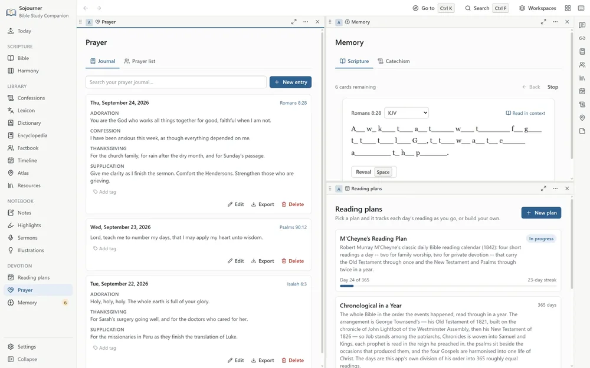
Opens the full size picture.The Psalter is there for singing too, on its own page under Devotion. Open a psalm, choose a tune, and press play. The words are set under the melody one stanza at a time, and each psalm remembers the tune you last sang it to. The page opens on your last psalm, the music can be made larger, and a long line breaks onto a second staff in a narrow pane.
The words are set line by line as the book of 1650 prints them, checked against two old editions and the Free Church of Scotland’s text. Nothing is modernized, so chuse, shew, and heav’n stay as the book has them.
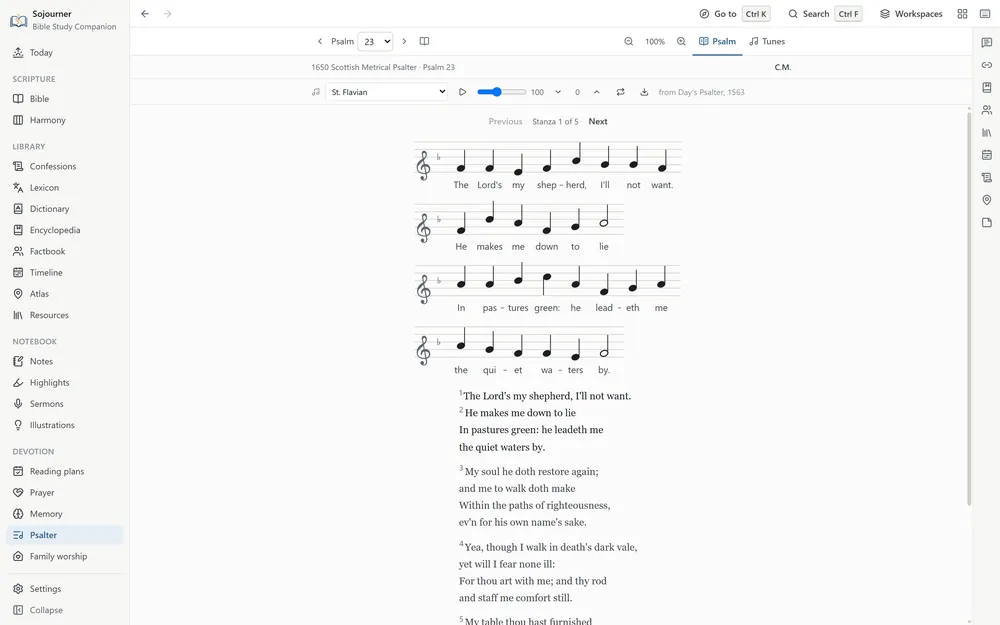
Opens the full size picture.For the household
Family Worship
Matthew Henry preached a sermon on family religion and called it A Church in the House. Sojourner has a page for keeping that church. It’s made for the one who leads, even if they feel the least ready of anyone.
A gathering takes a few minutes. You read a short passage, sing a psalm, go over the catechism, and pray. If you choose a verse to learn by heart, you say it together before you pray. The page walks through each step in order, so nothing has to be prepared and no one has to preach.
![The Family worship page, gathered eight times this September. Tonight the family reads Exodus 20:1-17, the Ten Commandments, sings Psalm 23, goes over question 5 of the Catechism for Young Children, and prays for three people from the prayer list. Beside the Begin button is Gather round. Below are the readings for the days coming up, from David and Goliath to the boy Jesus in the temple, a calendar of the last five weeks with a dot on each day the family met, and the reading plan in use, The First Four Weeks, at day 9 of 28.](assets/img/sojourner-family.webp) Opens the full size picture.
Opens the full size picture.
And these words, which I command thee this day, shall be in thine heart: And thou shalt teach them diligently unto thy children, and shalt talk of them when thou sittest in thine house, and when thou walkest by the way, and when thou liest down, and when thou risest up.
Deuteronomy 6:6-7 (opens in a new tab) (KJV)
If you’ve never done this before, begin with the first four weeks. That’s twenty-eight short readings that tell the story of the Bible, from the creation to the new creation. Each week has a psalm from the 1650 Psalter with its tune to play, and a new catechism question comes every other time you meet. You start with the Catechism for Young Children or the Shorter Catechism. You can choose the Heidelberg instead, and the Larger, with its long answers, is there for when the children are older.
Each reading comes with three questions to talk over, one each for faith, love, and hope. What does this passage teach us to believe about God? How does it call us to love God and our neighbour? What does it give us to hope for? You can reword them, add one, or take one away in the family settings, and your own go on the printed sheet too. Tonight’s catechism question comes with its answer, to say together until the children know it. Earlier questions come round again with the answer hidden until someone has had a try, so they aren’t lost. At prayer time the page offers the three names from your prayer list you’ve gone longest without praying for. The Lord’s Prayer is there for the nights when words won’t come.
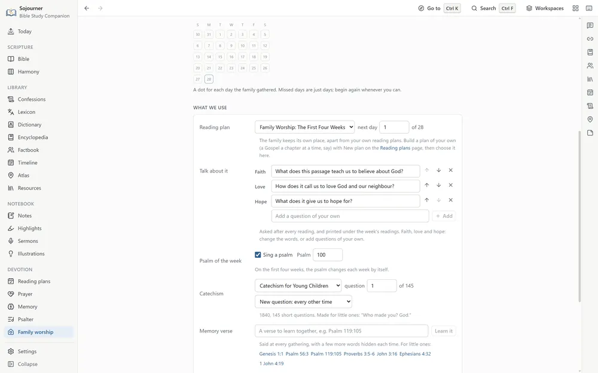
Opens the full size picture.The Gather round button puts the same steps on the whole screen in large type, for the kitchen table or the television. Press Amen at the end and the reading and the catechism move on. The page counts the times you gather, not the days on the calendar, so a missed night costs nothing. You pick up where you left off. There’s no streak to break, only a mark for each day you met.
![Gather round, filling the screen, at the catechism step, with Read and Sing checked off above it and Pray still to come. Tonight’s question from the Catechism for Young Children is question 5, Why ought you to glorify God? Because he made me and takes care of me. Beneath it, under Go over, earlier questions come round again. Who made you? and Why did God make you and all things? have their answers hidden behind Show the answer, and How can you glorify God? waits just below at the edge of the screen. A button at the foot reads Next, Pray.](assets/img/sojourner-gather.webp) Opens the full size picture.
Opens the full size picture.
The Print this week button puts the next seven readings, the psalm, the catechism questions, the memory verse, and the names to pray for on one sheet. For the one leading, the page gives some plain advice and points you to the old helps. The Directory for Family-Worship, which the Church of Scotland approved in 1647, is on the Confessions page beside the Catechism for Young Children of 1840. James W. Alexander’s Thoughts on Family-Worship is on the Sojourner Library shelf.
Free, on any device
Get Sojourner
Sojourner 0.4.1 is free. Open it in the browser on any phone, tablet, or computer, or download it for Windows 10 and 11 or for Linux. It needs no account.